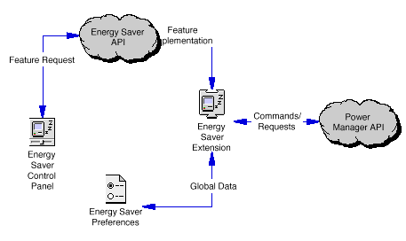

|
|
In an effort to
provide a consistent method of controlling the various power
conservation hardware and software features implemented on
the Macintosh platform, Apple has
introduced the Energy Saver system.
In addition to providing developers with a standard way to control
power management features such as display sleep/dimming, hard drive spindown,
idle shutdown or sleep, the Energy Services API also provides a consistent way
to synchronize the Human Interfaces for multiple concurrent applications
that need to access these features.
This Note discusses how to communicate with the Macintosh
Energy Saver Extension through the Energy Services API and
is important for developers who wish to access Mac OS power
management features from their applications.
This Note also includes the public interfaces for the Energy Services API.
Updated: [Dec 06 1996]
|
Energy Saver Overview
Energy Saver provides a consistent method of controlling
the various power conservation hardware and software
features implemented on the Macintosh platform.
Although the features it supports vary depending on the
machines' capabilities, Energy Saver typically attempts to reduce power
consumption by controlling such operations as:
- Display Sleep/Dimming -
by reducing the power requirements to the display monitor.
- Hard Drive Spindown - by
reducing power by spinning down (removing power)
the hard disk drive spindle motor.
- Idle Shutdown - by
programatically turning off power to the computer
without losing any data.
- Idle Sleep - Enter a reduced power requirement
state from which rapid recovery can be made when waking
up. Note that the sleep state differs according to the
hardware capabilities present in the machine.
- Scheduled Startup/Shutdown - Scheduled startup
is used to restart the system at a predetermined time.
When used in conjunction
with scheduled shutdown, document autosave, and
bookmarking, these can offer a substantial savings in
energy requirements while providing a convenient means of
restarting the system.
- Document AutoSave - Document autosave provides
the means to automatically save open untitled or unsaved
documents at system shutdown time without requiring user
intervention or confirmation.
- Wakeup Sound- A user-configurable sound to be
played when the system is waking up from sleep mode. Since
the monitor is typically dimmed, the wake-up sound is
the only means of determining if the system is currently active.
Even though the majority of action is handled by either the Mac OS Power
Manager or various Macintosh power conservation hardware, the Energy
Saver is the method used to provide the user with a mechanism for
determining when and how the various actions are to occur.
The Energy Services API also provides a way to synchronize the Human
Interfaces for multiple concurrent applications that need to access the
power management features.
Components of the Energy Saver
Energy Saver is actually composed of two separate
components: a system extension and a control panel.
- Control panel - The control panel manipulates
the settings that are stored
in system memory and a preference file.
- Energy Saver Extension - The extension uses
the settings stored in the preference file to direct
desired energy-saving behavior.
Figure 1 provides an overview of
the Energy Saver components.

Figure 1. Energy Saver Overview
|
Note:
The Energy Saver control panel is not really a
control panel. It is an application with a special
signature of 'APPC', which, to the Finder in
systems after Systems 7.5.2, is used to allow
applications dropped on the System Folder to be
automatically placed into the Control Panel.
This allows the developer to construct control
panels in the same manner as an application but
permits the Finder to do its auto-placement function.
|
Back to top
Energy Services Access
Applications can safely use the same
mechanism to manipulate the
Energy Saver preference file as the Energy Saver control
panel. This is accomplished through the Energy Services API.
The purpose of this API is to provide homogenous support for
high-level power management features that are not provided
by the Power Manager, as well as provide standardized
preference support for power manager functions that do not
have persistent PRAM settings.
The Energy Saver Extension provides auto power on/off
features for all Macs with an Egret or Cuda
microcontrollers. In addition, it will manage preferences
for Screen dimming, Hard disk spin down, sleep mode, and
options for all these features. There are calls that can be
used to obtain and set the preferences, as well as calls to
activate the settings in the preferences passed.
Whenever possible, application developers should use this
functionality instead of creating their own from scratch, at
least to the extent of updating the preferences, so that other
applications and control
panels will reflect user choices made in all applications.
Back to top
Determining If Your Mac Supports
the Energy Services API
The proper way to determine if a particular Macintosh model
supports the Energy Services API is to use the Gestalt function to
check for the 'wnkl' selector, then check the response for non-nil
value. This will indicate that the Energy Services API is loaded.
Calling the Energy Services API
Once you have established the existence of the Energy Services Manager you can
access the energy services API via the gestalt selector 'wnkl' response value.
The response is a Handle to a data structure whose first field is a
pointer to the Main routine. The interface to this routine is:
typedef pascal long (*ESRoutineCallPtr)(short selector, long parm1, long parm2);
|
To facilitate developer usage, the EnergyServPubLib.c
and EnergyServPub.h files are provided with this
document and and should be used to access to the Energy Services API.
Calling the ESGetINITVersion function from the
EnergyServPubLib is the recomended way to determine if the Energy
Services API is loaded and available. The interface code will perform
the proper safety checks.
Back to top
Energy Services API
The ESGlobals Structure
The Energy Saver Extension maintains a set of preferences
globals. These globals are defined in the ESGlobals
structure as follows:
typedef struct {
short version; // data structure version (1)
long EnergySaverFeatures; // ES features (not used yet)
// Idle Sleep & ShutDown Timing
unsigned long dimIdleTime; // minutes before screen sleeps
unsigned long spinDownIdleTime; // minutes before HD spins down
// desktops must be >30
unsigned long sleepIdleTime; // minutes prior to system sleep
short idleFlags; // Idle time features supported
// 0001 = Enable dimIdleTime
// 0002 = Enable spinDownIdleTime
// 0008 = ShutDown instead of sleep
// 0010 = Never Spindown disk
// 0020 = Restart after powerfail
short reserved1;
short reserved2;
// Schedule Sleep & Shut Down
// These times are in minutes from midnight (actually 12: 00: 01 AM )
// these fileds are only used by the Energy Saver application HI.
// your application should use the SDxxxTime and SWUxxxTime fields
// to maniupulate the shutdown and Wakeup time
unsigned long mainWUTime; // Time computer starts up
unsigned long mainSDTime; // Time computer shuts down
// bit fields telling which day of the week Wakeup or Shutdown is enabled
short WUFields; // Startup
short SDFields; // Shutdown
// Monday = 0x0001
// Tuesday = 0x0002
// Wednesday = 0x0004
// Thursday = 0x0008
// Friday = 0x0010
// Saturday = 0x0020
// Sunday = 0x0040
// EveryDay = 0x007F
// Enabled = 0x0080
// The following fields let you specify different times of the day
// for startup and shutdown for each individual day. If you are not
// going to allow specific daily schedules. then set all WU's to
// mainWUTime and all SD fields to mainSDTime.
// Shutdown Time
unsigned long SDMonTime;
unsigned long SDTueTime;
unsigned long SDWedTime;
unsigned long SDThuTime;
unsigned long SDFriTime;
unsigned long SDSatTime;
unsigned long SDSunTime;
// Wakeup Time
unsigned long WUMonTime;
unsigned long WUTueTime;
unsigned long WUWedTime;
unsigned long WUThuTime;
unsigned long WUFriTime;
unsigned long WUSatTime;
unsigned long WUSunTime;
// Sleep Prefs Info stuff
short reserved3;
short WUSoundResID; // ID of the 'snd ' to play on wakeup
short reserved4;
// Startup Prefs Info
short reserved5;
short AppFlags; // Always set to 0 in new pref file.
short NonComplianceFlag; // Set if machine sleeps over 30 watts
// Shutdown Prefs Info
short SDIdleTime;
short SDNotifyFlags; // Notification Options
// 0020 = Notify on Shutdown
// 0001 = Blinking icon
// 0002 = Text message
// 0004 = Play snd
// 0008 = save files
// 8008 = Dont save on sleep
// 0400 = Play snd on Wakeup
// 0800 = Wakeup on Ring detect
// 1000 = Blink pwr light (portables)
// 2000 = mute sounds when asleep
short SDNotifyDelayTime;
short SDSoundResID;
// ID of the 'snd ' to play on Shutdown
short reserved6;
short reserved7;
// Energy Saver General prefs info
long reserved8;
Boolean reserved9;
} ESGlobals, *ESGlobalsPtr, **ESGlobalsHand;
|
Back to top
ESLoadPreferences
ESLoadPreferences reloads the current settings from
the preferences file and updates the Energy Services
Globals. It also returns a copy of the settings for your use.
PROTOTYPE
OSErr ESLoadPreferences(ESGlobalsPtr thePrefs);
|
|
thePrefs
|
A pointer to the ESGlobals structure
|
RESULT CODE
File Read Errors, Memory Errors, ES Errors
IMPORTANT
This is called by the Energy Saver Extension at system
startup time. Your application should never have
to make this call unless you intend to revert back to the
saved preference settings.
ESLoadPreferences will not update the
state of the machine. After
making this call, you need to call
ESRefreshSettings() in
order to make the read in settings take effect.
|
Back to top
ESGetPreferences
ESGetPreferences returns a copy of
the current settings for your use. This is the normal
call an application will make to get the current user
settings for all the energy services information.
PROTOTYPE
OSErr ESGetPreferences(ESGlobalsPtr thePrefs);
|
|
thePrefs
|
A pointer to the ESGlobals structure
|
RESULT CODE
Memory Errors, ES Errors
|
Back to top
ESSetPreferences
ESSetPreferences copies the passed settings
to the Energy Services globals.
PROTOTYPE
OSErr ESSetPreferences(ESGlobalsPtr thePrefs);
|
|
thePrefs
|
A pointer to the ESGlobals structure
|
RESULT CODE
Memory Errors, ES Errors
IMPORTANT
ESSetPreferences will NOT call the Power Manager to make
the settings effective, nor will it set new startup and
shutdown times. After making this call, you need to call
ESRefreshSettings() to cause the new settings to take effect.
|
Back to top
ESRefreshSettings
ESRefreshSettings will cause the current settings to be
activated and will make all necessary power manager calls
to cause them to be active. In addition, it will install
whatever startup and shutdown tasks need to be installed
to act on the current set of notifications.
PROTOTYPE
OSErr ESRefreshSettings();
|
RESULT CODE
ES Errors
|
Back to top
ESSavePreferences
ESSavePreferences performs three operations: it
calls ESSetPreferences() to
transfer the passed settings, then ESRefreshSettings() to
make them active, and lastly it
saves the settings out to the preferences file so they
remain consistent over boots. This is the normal call an
application will make when it wants to make a persistent
update to the Energy services settings.
PROTOTYPE
OSErr ESSavePreferences(ESGlobalsPtr thePrefs);
|
|
thePrefs
|
A pointer to the ESGlobals structure
|
RESULT CODE
File Errors, Memory Errors, ES Errors
IMPORTANT
When specifying snd resources in the WUSoundResID
or SDSoundResID field of ESGlobals record,
you should ensure that those resources are in the current resource chain.
This is important because ESSavePreferences will cause
them to be loaded, detached and copied into System Heap.
|
Back to top
ESAddNoteProc
You can use the ESAddNoteProc to install an
Energy Saver notification response procedure. This
notfifier can be used to inform your application that the
energy saver prefs are being read or written.
PROTOTYPE
OSErr ESAddNoteProc(ESNotifyProcPtr theProc, long data);
|
|
theProc
|
A pointer to a notification response procedure
|
|
|
|
|
data
|
A user defined ref to pass to the data procedure
|
RESULT CODE
ES Errors
SEE ALSO
The Energy Saver Notification and ESRemoveNoteProc function.
|
Back to top
ESRemoveNoteProc
You can use the ESRemoveNoteProc to remove
an Energy Saver notification response procedure.
PROTOTYPE
OSErr ESRemoveNoteProc(ESNotifyProcPtr theProc);
|
|
theProc
|
A pointer to a notification response procedure
|
RESULT CODE
ES Errors
SEE ALSO
The Energy Saver Notification and ESAddNoteProc function.
|
Back to top
Energy Saver Notification Function
Once installed by the ESAddNoteProc
function, your notification procedure will be called when
any application attempts to access the ES prefs.
The notifier will be called with the selector
xNoteESDataReq whenever the Energy Saver
prefs are being read but before the application is
returned to them.
You are also called when someone copies new prefs to
the Energy Saver Extension with a
xNoteNewESData selector. You then get a
chance to change the data that they have copied Globals,
but you get to it before it is applied.
This allows your application to dynamically update the
display of the ESGlobals or to filter data values.
PROTOTYPE
pascal long MyESNotifyProc (short selector, ESGlobalsPtr theData);
|
|
selector
|
A value indicating the type of activity that
has occurred. See the description below for the
meaning of this field.
|
|
|
|
|
thePrefs
|
A pointer to the ESGlobals structure
|
DESCRIPTION
The valid types of activity are:
|
Value name
|
Value
|
Description
|
|
xNoteNewESData
|
1
|
New ESGlobals written out.
|
|
xNoteESDataReq
|
2
|
ESGlobals are being requested.
|
|
Back to top
ESRestoreDefaults
ESRestoreDefaults is used to restore the
system to the machine-dependent default settings as
stored in the extension resource data. Use this call
whenever you want to return the Energy Saver
back to the installed default settings.
You also get a copy of the ESGlobals so that you can
see what those defaults are. Getting the ESGlobals is
convenient so that you can update your HI to reflect the
current machine state.
One possible use for this is in response to a "Apple
Defaults" menu item.
PROTOTYPE
OSErr ESRestoreDefaults(ESGlobalsPtr thePrefs);
|
|
thePrefs
|
A pointer to the ESGlobals structure
|
RESULT CODE
Memory Errors, ES Errors
|
Back to top
ESGetUnsavedFolder
This call is used to retrieve the pathname of the Unsaved
Document folder used by the Autosave feature.
PROTOTYPE
OSErr ESGetUnsavedFolder(Ptr theString);
|
|
theString
|
A pointer to a string into which the current
pathname of the unsaved document folder will be copied.
|
RESULT CODE
Memory Errors, ES Errors
|
Back to top
ESSetUnsavedFolder
You can use the ESSetUnsavedFolder to set
the pathname of the Unsaved Document folder used by the
Autosave feature.
PROTOTYPE
OSErr ESSetUnsavedFolder(Ptr theString);
|
|
theString
|
A pointer to a string which contains the
pathname of the unsaved document folder to be used.
|
RESULT CODE
Memory Errors, ES Errors
|
Back to top
ESGetINITVersion
This call is used to retrieve the current version number
of the installed Energy Saver extension file. Use this
call to verify that the correct version of the Energy Saver
extension is being used.
PROTOTYPE
OSErr ESGetINITVersion(Handle* theVers);
|
|
theVers
|
A pointer to the version structure
|
RESULT CODE
ES Errors
|
Back to top
Summary
As the Macintosh platform continues to evolve, the Energy
Saver API provides a consistent method of monitoring and
controlling power management features. In addition, the
Energy Saver API also presents a few interesting opportunities
for third-party developer applications.
References
Inside Macintosh: Devices, Chapter 6, Power Manager Reference
Technote 1046: Inside Macintosh: Devices, Power Manager Addenda
Technote 1079: Power Management & Servers: Auto Restart From Power Failure
Back to top
Downloadables
|

|
Acrobat version of this Note (108K).
|
Download
|
|

|
Binhexed version of the Energy Services API files (38K)
|
Download
|
Back to top
|